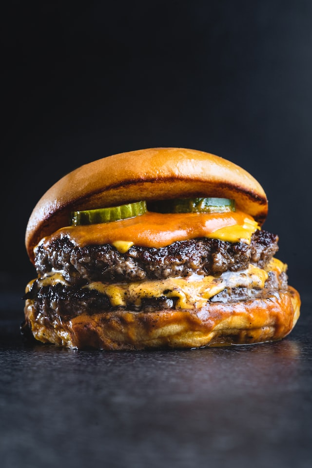

How to make a no-nonsense burger

Ingredients:
4 Brioche Buns
1 1/2 lbs 80/20 Ground Beef
1 tbsp Worcestershire sauce
1 1/2 tsp Salt
1/2 tsp Pepper
1 tsp Garlic Powder
Instructions:
1. Pre-heat grill to 375 F
2. In a bowl, combine the ground beef, Worcestershire sauce, salt, pepper, and garlic powder.
3. Divide meat into fourths. Press each fourth into a patty shape.
4. Grill patty to desired doneness.
5. Place cooked patty in-between a brioche bun and serve immediately.
6. Enjoy!